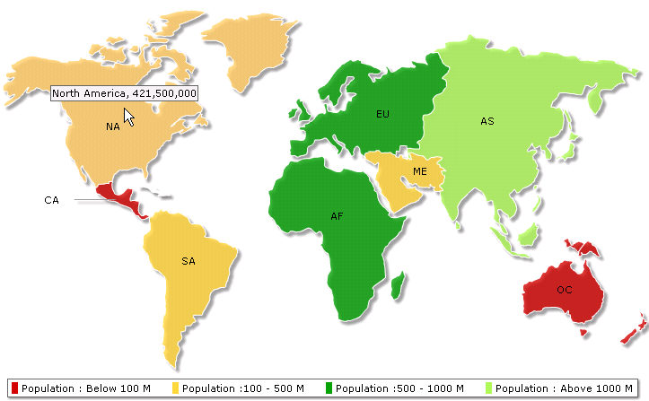

FusionMaps with ASP.NET (VB) > Using dataXML Method |
||||||||||||||||||||
| FusionMaps can effectively be used with Microsoft ASP.NET (VB) to plot data over geographic locations. In this section and the following, we'll show examples on how to plot data on FusionMaps using various methods in ASP.NET (VB). | ||||||||||||||||||||
We'll cover the following examples here:
|
||||||||||||||||||||
| Before proceeding further, we recommend to go through the documentation "How to use FusionMaps" for a better insight. | ||||||||||||||||||||
| Sample: Using dataXML method | ||||||||||||||||||||
|
||||||||||||||||||||
| The code discussed here is present in Download Package > Code > VB_NET > BasicExample folder. | ||||||||||||||||||||
| We will be displaying the population of the continents using FusionMaps in this example. Here is the ASP code that has been used in the example. | ||||||||||||||||||||
| Creating World Population Map from the data stored in an array | ||||||||||||||||||||
| The code to create the world map with data from array is contained in BasicArray.aspx is listed as under : | ||||||||||||||||||||
<%@ Page Language="VB" AutoEventWireup="false" CodeFile="BasicArray.aspx.vb" Inherits="BasicArrayExample_dataXML" %> |
||||||||||||||||||||
In the above code, we first include FusionMaps.js file to enable us embed the map using JavaScript. The code behind script generates the map in the litreral control WorldPopulationMap. |
||||||||||||||||||||
Let us see how code behind script in BasicArray.aspx.vb builds the map XML and renders the map: |
||||||||||||||||||||
| Imports InfoSoftGlobal 'FusionMaps.dll in bin folder Partial Class BasicArrayExample_dataXML ''' <summary>This Function will Help to Generate US Map.</summary> ' Declare array entity to store world population 'Store population data 'Now, we need to convert this data into XML. 'Initialize <map> element 'Set Color ranges : 4 color ranges for population ranges 'Open data element that will store map data 'Use Data from array for each entity 'close data element 'Create the Map with data contained in strXML 'embed the chart rendered as HTML into Literal - WorldPopulationMap |
||||||||||||||||||||
| Steps involved in this code | ||||||||||||||||||||
In this method, we define an array dataArray to store population data for 8 world regions. The array has two columns - first one for each region's/entity's Internal ID and the next one for population values. |
||||||||||||||||||||
| Internal ID is a field which helps to identify each part of a map uniquely. Please go through the Map Specificaiton Sheet to know the Internal IDs for each map in FusionMaps. | ||||||||||||||||||||
Dim dataArray(7,2) As Object 'Store population data |
||||||||||||||||||||
| Next, we defined a variable strXML to store the entire XML data in a StringBuilder object. | ||||||||||||||||||||
'Declare strXML to store dataXML of the map |
||||||||||||||||||||
| The following code is used to define the color range for the map entities. Different colors show different range of population. The first range is for the regions where population ranges from 0 to 100000000 and it is shown in Red. The second range is for the regions where population ranges from 100000000 to 500000000 and it is shown in Yellow. The third range is from 500000000 to 1000000000 in dark green and the fourth range is 1000000000 and above in light green color. | ||||||||||||||||||||
| 'Set Color ranges : 4 color ranges for population ranges strXML.Append("<colorRange>") strXML.Append("<color minValue='0' maxValue='100000000' displayValue='Population : Below 100 M' color='CC0001' />") strXML.Append("<color minValue='100000000' maxValue='500000000' displayValue='Population :100 - 500 M' color='DDD33A' />") strXML.Append("<color minValue='500000000' maxValue='1000000000' displayValue='Population :500 - 1000 M' color='069F06' />") strXML.Append("<color minValue='1000000000' maxValue='5000000000' displayValue='Population : Above 1000 M' color='ABF456' />") strXML.Append("</colorRange>") |
||||||||||||||||||||
| Next, we added the map data in <entity> elements by iterating through the array elements. We used for loop for this. | ||||||||||||||||||||
'Open data element that will store map data 'Use Data from array for each entity 'close data element |
||||||||||||||||||||
| We called the function renderMap() from FusionMaps. It generates the HTML and JavaScript necessary to render the map. Finally we set the generated HTML and JavaScript to the literal control - WorldPopulationMap. | ||||||||||||||||||||
'Create the Map with data contained in strXML 'embed the chart rendered as HTML into Literal - WorldPopulationMap |
||||||||||||||||||||
| InfosoftGlobal assembly has a class, FusionMaps, that contains the function renderMap(). This function helps us create the map simply by passing few parameters in a predefined sequence. renderMap() function accepts the following parameters in the same order as they are presented below: | ||||||||||||||||||||
|
||||||||||||||||||||
| Note that you can also use RenderMapHTML() method with same parameters. Unlike RenderMap() method which uses JavaScript embedding, this method uses HTML Embedding of Maps. This comes handy while using ASP.NET.AJAX UpdatePanel and other AJAX components. | ||||||||||||||||||||
| Below is the screenshot of the map used for this example. | ||||||||||||||||||||
|  |